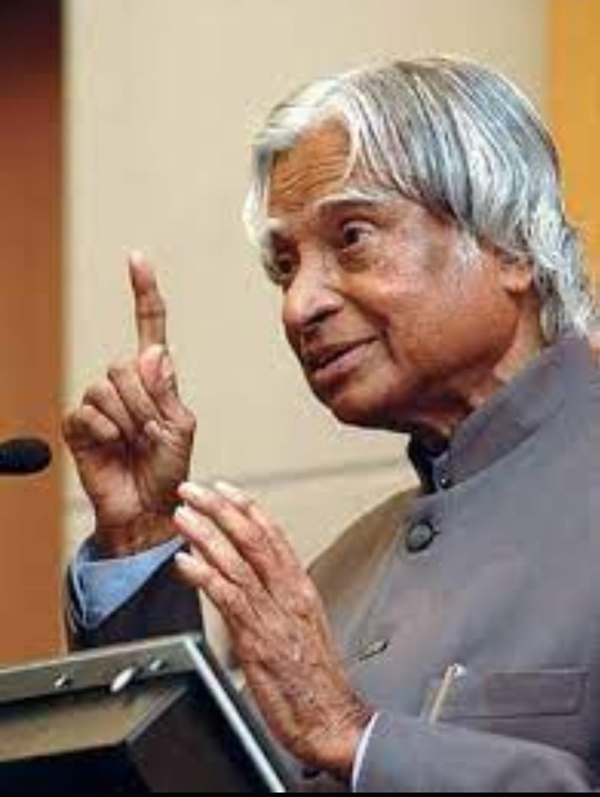
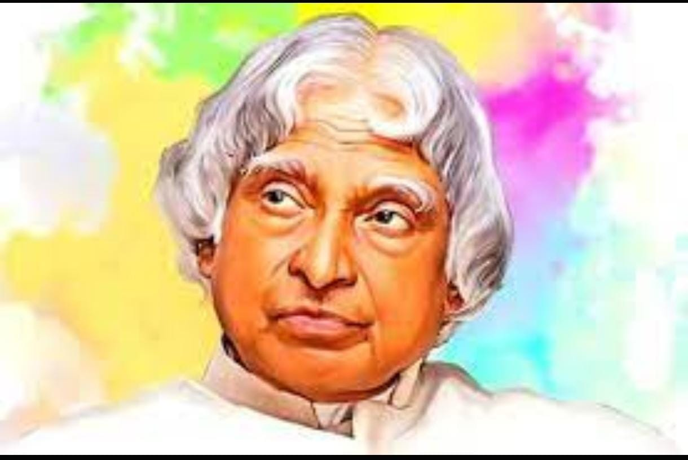

Dr. Avul Pakir Jainulabdeen Abdul Kalam, fondly known as the "Missile Man of India," was a visionary scientist, an inspirational educator, and the 11th President of India. His life journey, marked by unwavering dedication, humble beginnings, and a deep commitment to the nation, continues to inspire millions across the globe. Dr. A.P.J. Abdul Kalam, often referred to as the "Missile Man of India," was a visionary scientist, dedicated educator, and the 11th President of India. His life journey, marked by humble beginnings and extraordinary achievements, continues to inspire millions worldwide. Join us in celebrating the remarkable legacy of this great visionary
Dr. Kalam was born on October 15, 1931, in Rameswaram, Tamil Nadu, India, into a modest Tamil Muslim family. His childhood was spent in a humble environment, and he sold newspapers as a young boy to support his family's income. Despite facing economic challenges, Kalam's passion for learning was unstoppable. He graduated in Physics from St. Joseph's College, Tiruchirappalli, and then went on to study Aerospace Engineering at the Madras Institute of Technology. His academic excellence and unquenchable curiosity soon propelled him into the world of science and innovation.
Dr. Abdul Kalam made groundbreaking contributions to India's space and defense programs. He played a pivotal role in the development of India's first indigenous satellite launch vehicle, SLV-III, which successfully launched the Rohini satellite into orbit in 1980. This achievement marked a significant milestone in India's space capabilities. His leadership and expertise were further evident in the successful development of ballistic missile technology, including the Agni and Prithvi missiles, strengthening India's defense capabilities and earning him the title of the "Missile Man."
Dr. Kalam's vision extended beyond scientific achievements. He firmly believed that science and technology could be harnessed to transform India into a developed nation. He emphasized the importance of education, innovation, and youth empowerment as key drivers of progress. As the President of India from 2002 to 2007, he continued to inspire the nation with his "People's President" approach, connecting with people of all ages and backgrounds, especially the youth.
Dr. A.P.J. Abdul Kalam's legacy lives on through his books, speeches, and the countless lives he touched. His autobiography, "Wings of Fire," remains an inspirational bestseller, encouraging individuals to dream big and work tirelessly to achieve their goals. He passed away on July 27, 2015, while doing what he loved the most—delivering a lecture to students. His sudden departure left a void in the hearts of millions, but his teachings and spirit continue to guide and inspire generations.
Dr. A.P.J. Abdul Kalam's life journey is a testament to the power of determination, perseverance, and a deep love for one's country. His contributions to science, education, and national development continue to inspire individuals worldwide to reach for the stars and make a positive impact on society. As we remember the "People's President" on his birth and death anniversaries, let us carry forward his vision of a strong, united, and technologically advanced India—a vision he dedicated his entire life to. Let us all strive to be dreamers and doers, just like Dr. A.P.J. Abdul Kalam, and work together to build a brighter future for our nation and the world. Feel free to customize and enhance this content as needed for your tribute page. You can also add images and additional sections to provide a more comprehensive tribute to this remarkable individual.